<!DOCTYPE html>


<html lang="en">


<head>
  <meta charset="utf-8" />
   
  <meta name="keywords" content="技术" />
   
  <meta name="description" content="Java世界第一" />
  
  <meta name="viewport" content="width=device-width, initial-scale=1, maximum-scale=1" />
  <title>
    使用hexo搭建github个人博客 |  XDJ个人博客
  </title>
  <meta name="generator" content="hexo-theme-ayer">
  
  <link rel="shortcut icon" href="/favicon.ico" />
  
  
<link rel="stylesheet" href="/dist/main.css">

  
<link rel="stylesheet" href="https://cdn.jsdelivr.net/gh/Shen-Yu/cdn/css/remixicon.min.css">

  
<link rel="stylesheet" href="/css/custom.css">

  
  
<script src="https://cdn.jsdelivr.net/npm/pace-js@1.0.2/pace.min.js"></script>

  
  

  

</head>

</html>

<body>
  <div id="app">
    <main class="content on">
      <section class="outer">
  <article id="post-personal-blog" class="article article-type-post" itemscope
  itemprop="blogPost" data-scroll-reveal>

  <div class="article-inner">
    
    <header class="article-header">
       
<h1 class="article-title sea-center" style="border-left:0" itemprop="name">
  使用hexo搭建github个人博客
</h1>
 

    </header>
    

    
    <div class="article-meta">
      <a href="/2020/04/18/personal-blog/" class="article-date">
  <time datetime="2020-04-17T16:41:31.000Z" itemprop="datePublished">2020-04-18</time>
</a>
      
      
      
<div class="word_count">
    <span class="post-time">
        <span class="post-meta-item-icon">
            <i class="ri-quill-pen-line"></i>
            <span class="post-meta-item-text"> Word count:</span>
            <span class="post-count">1.3k</span>
        </span>
    </span>

    <span class="post-time">
        &nbsp; | &nbsp;
        <span class="post-meta-item-icon">
            <i class="ri-book-open-line"></i>
            <span class="post-meta-item-text"> Reading time≈</span>
            <span class="post-count">5 min</span>
        </span>
    </span>
</div>

      
    </div>
    

    
    
    <div class="tocbot"></div>


    

    
    <div class="article-entry" itemprop="articleBody">
      
      

      
      <p>###我们这里参考hexo官方文档 <a href="https://hexo.io/docs" target="_blank" rel="noopener">https://hexo.io/docs</a> ，进行安装配置<br>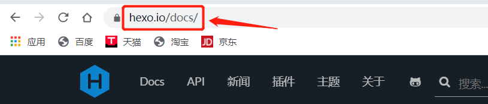<br></br></p>
<h3 id="使用hexo首先要安装node-js和git"><a href="#使用hexo首先要安装node-js和git" class="headerlink" title="使用hexo首先要安装node.js和git"></a>使用hexo首先要安装node.js和git</h3><p>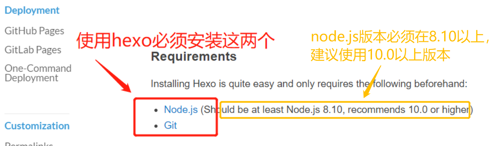<br></br></p>
<h4 id="不同环境安装git和node-js的方法"><a href="#不同环境安装git和node-js的方法" class="headerlink" title="不同环境安装git和node.js的方法"></a>不同环境安装git和node.js的方法</h4><p>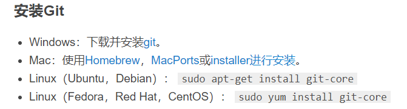<br></br><br>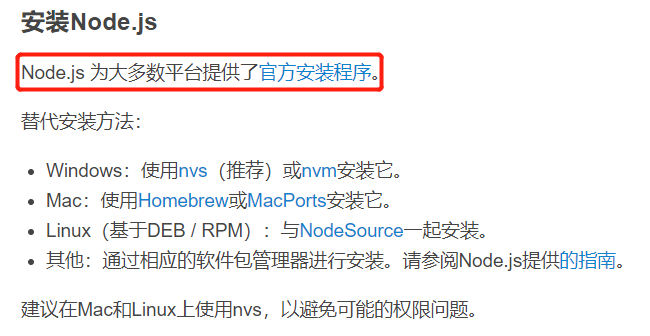</p>
<h4 id="git下载"><a href="#git下载" class="headerlink" title="git下载"></a>git下载</h4><p>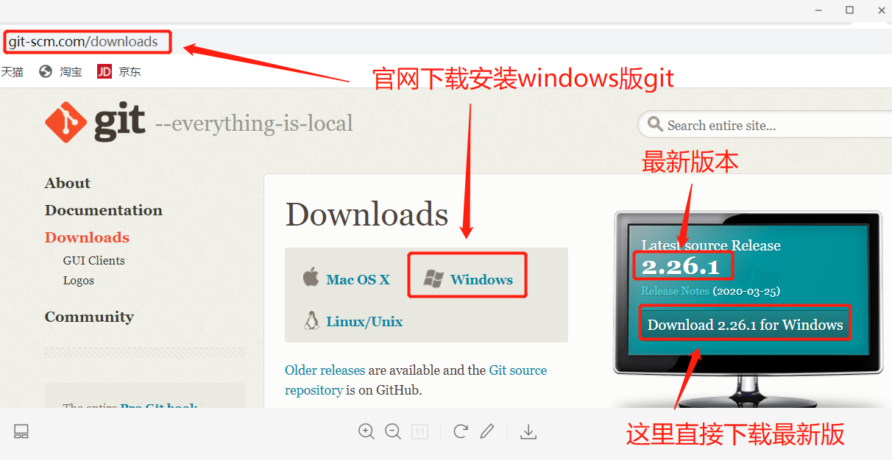</p>
<h4 id="node-js下载"><a href="#node-js下载" class="headerlink" title="node.js下载"></a>node.js下载</h4><p>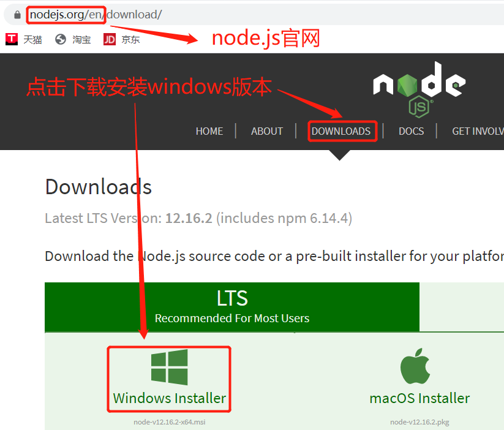</p>
<h4 id="安装node-js"><a href="#安装node-js" class="headerlink" title="安装node.js"></a>安装node.js</h4><p>双击node.js setup 弹出安装页面，然后一直点击下一步就可以了<br>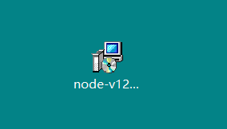<br>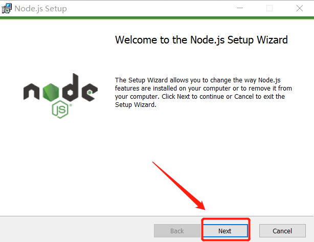</p>
<p>node.js默认安装路径为C:\Program Files\nodejs。如下图则说明安装成功：<br>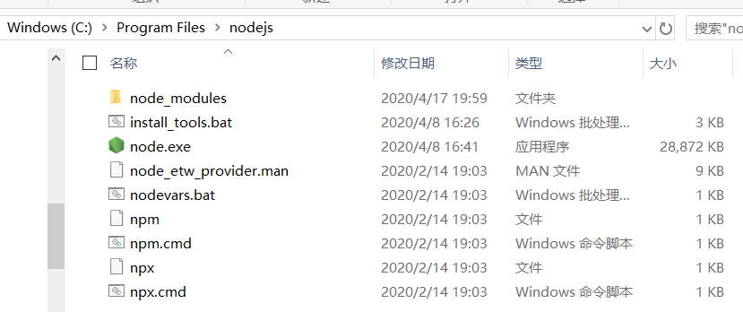</p>
<p>node环境变量配置:<br>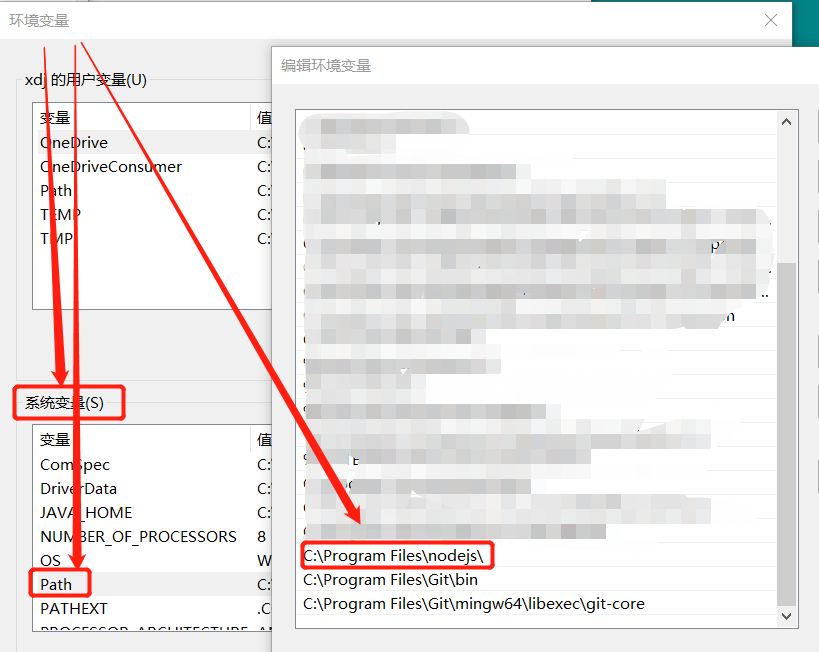<br>node环境配置好后，进入cmd 输入node -v查看版本成功至此node安装配置完成</p>
<figure class="highlight bash"><table><tr><td class="gutter"><pre><span class="line">1</span><br><span class="line">2</span><br></pre></td><td class="code"><pre><span class="line">C:\Users\xdj&gt;node -v</span><br><span class="line">v12.16.2</span><br></pre></td></tr></table></figure>

<h4 id="安装git"><a href="#安装git" class="headerlink" title="安装git"></a>安装git</h4><p>git安装也是一路next即可，详细步骤可参考：<a href="https://blog.csdn.net/sanxd/article/details/82624127" target="_blank" rel="noopener">https://blog.csdn.net/sanxd/article/details/82624127</a><br></br><br>如下图，git安装成功<br><br>接下来配置git环境变量<br>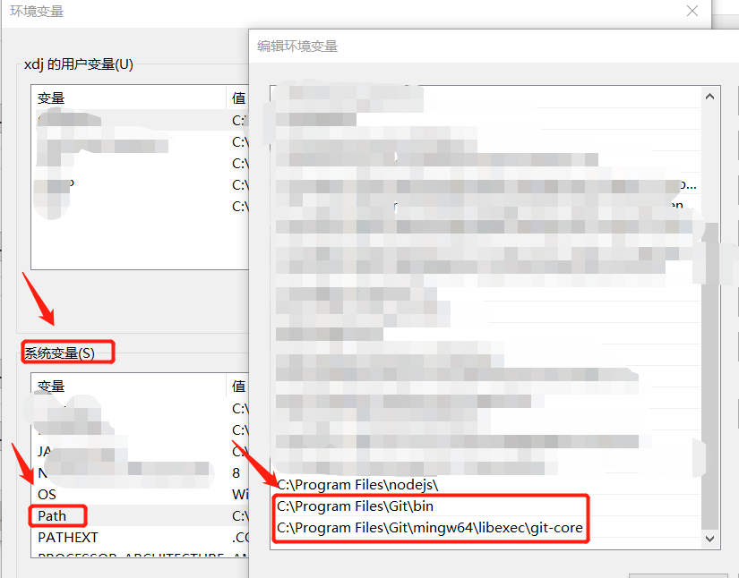<br>git环境变量配置好后，cmd命令产看git版本:git –version,版本产看成功，支持git安装配置完成。</p>
<figure class="highlight bash"><table><tr><td class="gutter"><pre><span class="line">1</span><br><span class="line">2</span><br></pre></td><td class="code"><pre><span class="line">C:\Users\xdj&gt;git --version</span><br><span class="line">git version 2.26.1.windows.1</span><br></pre></td></tr></table></figure>
<p>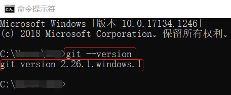<br></br><br>接下来我们需要新建一个新的文件夹（我这里在c盘下新建了一个Blog的文件夹）<br></br><br>cmd进入blog，修改npm源为国内淘宝的源以提高速度</p>
<figure class="highlight bash"><table><tr><td class="gutter"><pre><span class="line">1</span><br><span class="line">2</span><br><span class="line">3</span><br><span class="line">4</span><br></pre></td><td class="code"><pre><span class="line">C:\Blog&gt;npm install -g cnpm --registry=https://registry.npm.taobao.org</span><br><span class="line">C:\Users\xdj\AppData\Roaming\npm\cnpm -&gt; C:\Users\xdj\AppData\Roaming\npm\node_modules\cnpm\bin\cnpm</span><br><span class="line">+ cnpm@6.1.1</span><br><span class="line">updated 1 package <span class="keyword">in</span> 43.556s</span><br></pre></td></tr></table></figure>
<p>检测是否安装成功</p>
<figure class="highlight bash"><table><tr><td class="gutter"><pre><span class="line">1</span><br><span class="line">2</span><br><span class="line">3</span><br><span class="line">4</span><br><span class="line">5</span><br><span class="line">6</span><br><span class="line">7</span><br><span class="line">8</span><br></pre></td><td class="code"><pre><span class="line">C:\Blog&gt;cnpm -v</span><br><span class="line">cnpm@6.1.1 (C:\Users\xdj\AppData\Roaming\npm\node_modules\cnpm\lib\parse_argv.js)</span><br><span class="line">npm@6.14.4 (C:\Users\xdj\AppData\Roaming\npm\node_modules\cnpm\node_modules\npm\lib\npm.js)</span><br><span class="line">node@12.16.2 (C:\Program Files\nodejs\node.exe)</span><br><span class="line">npminstall@3.27.0 (C:\Users\xdj\AppData\Roaming\npm\node_modules\cnpm\node_modules\npminstall\lib\index.js)</span><br><span class="line">prefix=C:\Users\xdj\AppData\Roaming\npm</span><br><span class="line">win32 x64 10.0.17134</span><br><span class="line">registry=https://r.npm.taobao.org</span><br></pre></td></tr></table></figure>
<p>registry=<a href="https://r.npm.taobao.org" target="_blank" rel="noopener">https://r.npm.taobao.org</a> 说明淘宝源安装成功<br>如果出现npm不是内部命令的情况，可以输入一下命令解决</p>
<figure class="highlight bash"><table><tr><td class="gutter"><pre><span class="line">1</span><br></pre></td><td class="code"><pre><span class="line">C:\Blog&gt;npm install -g cnpm</span><br></pre></td></tr></table></figure>

<h3 id="安装Hexo"><a href="#安装Hexo" class="headerlink" title="安装Hexo"></a>安装Hexo</h3><p>我们回到hexo官方文档，根据文档介绍我们需要使用npm install -g hexo-cli命令安装hexo组件，使系统支持hexo</p>
<p>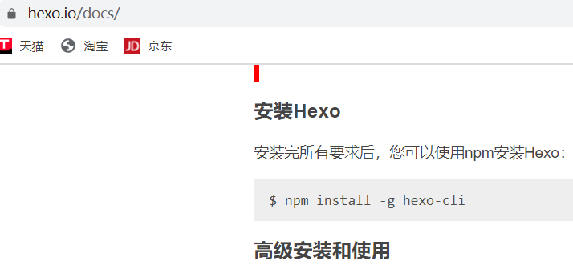</p>
<figure class="highlight bash"><table><tr><td class="gutter"><pre><span class="line">1</span><br></pre></td><td class="code"><pre><span class="line">C:\Blog&gt;npm install -g hexo-cli</span><br></pre></td></tr></table></figure>
<p>接下来执行如图操作：<br>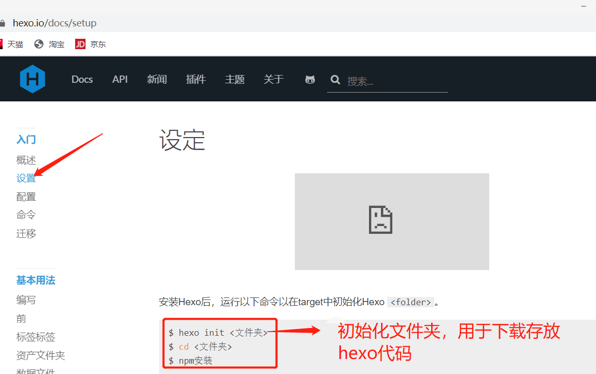</p>
<figure class="highlight bash"><table><tr><td class="gutter"><pre><span class="line">1</span><br><span class="line">2</span><br><span class="line">3</span><br></pre></td><td class="code"><pre><span class="line">C:\Blog&gt; hexo init hexo</span><br><span class="line">C:\Blog&gt; <span class="built_in">cd</span> hexo </span><br><span class="line">C:\Blog\hexo&gt; npm install</span><br></pre></td></tr></table></figure>
<p>hexo init hexo命令会从hexo的服务器上将hexo的源码下载下来放在我们定义的hexo文件夹下<br>npm install安装hexo</p>
<p>安装完成后，输入hexo s启动服务器</p>
<figure class="highlight bash"><table><tr><td class="gutter"><pre><span class="line">1</span><br><span class="line">2</span><br><span class="line">3</span><br></pre></td><td class="code"><pre><span class="line">C:\Blog\hexo&gt;hexo s</span><br><span class="line">INFO  Start processing</span><br><span class="line">INFO  Hexo is running at http://localhost:4000 . Press Ctrl+C to stop.</span><br></pre></td></tr></table></figure>
<p>启动好之后，会提示可以通过<a href="http://localhost:4000地址访问博客，如下图：">http://localhost:4000地址访问博客，如下图：</a><br>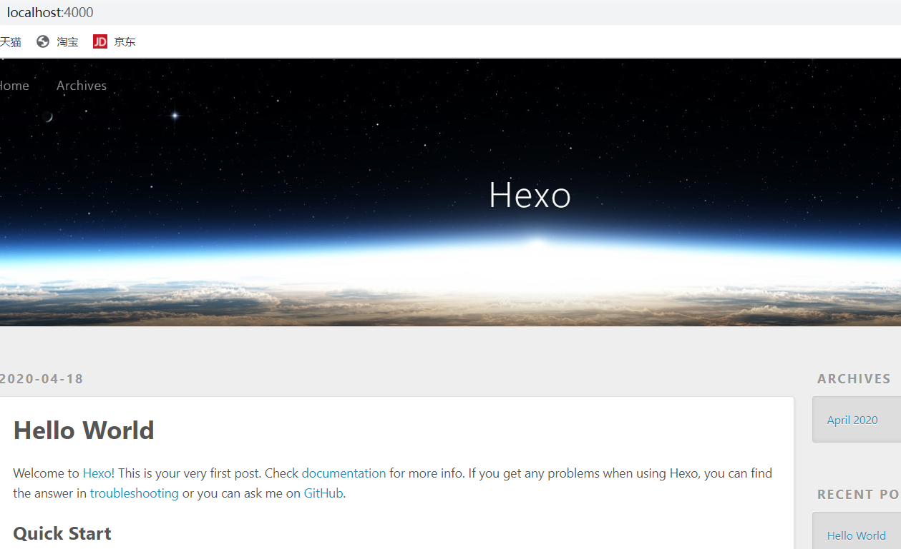</p>
<h3 id="博客编辑"><a href="#博客编辑" class="headerlink" title="博客编辑"></a>博客编辑</h3><p>博客写在哪个地方？博客文档存放在hexo/source/_posts 目录下：<br>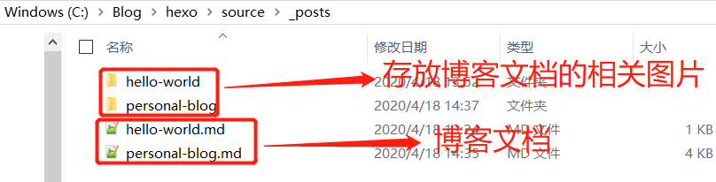<br>每一个.md文件就是一篇博客文章<br>这里想要在文档中插入图片，必须先在将_config.yml配置文件的 _asset_folder属性设为true，通过<br> 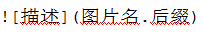<br> 这样的格式命令就可以在文档中插入图片了。更多markdown语法学习可参考： <a href="https://www.jianshu.com/p/8da1f362f898" target="_blank" rel="noopener">https://www.jianshu.com/p/8da1f362f898</a></p>
<p>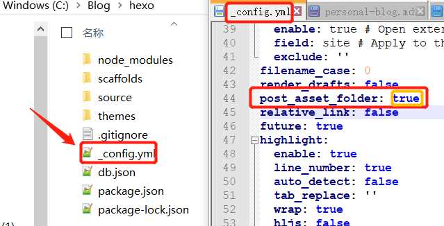</p>
<h3 id="博客主题"><a href="#博客主题" class="headerlink" title="博客主题"></a>博客主题</h3><p>如果想要不同的博客主题可以在 hexo官网 <a href="https://hexo.io/themes/" target="_blank" rel="noopener">https://hexo.io/themes/</a> 上选择喜欢的主题下载<br>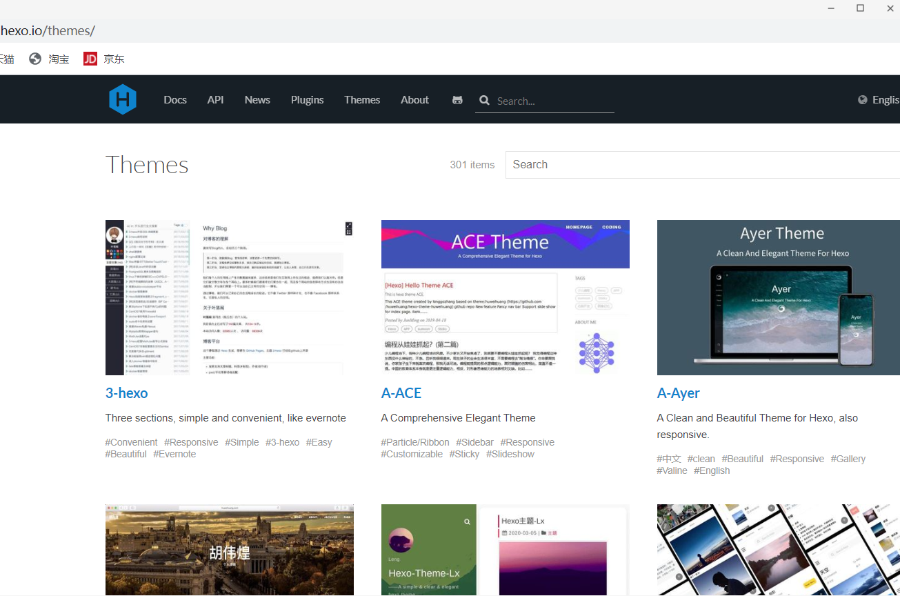<br>点击主题名称进入主题的github仓库<br>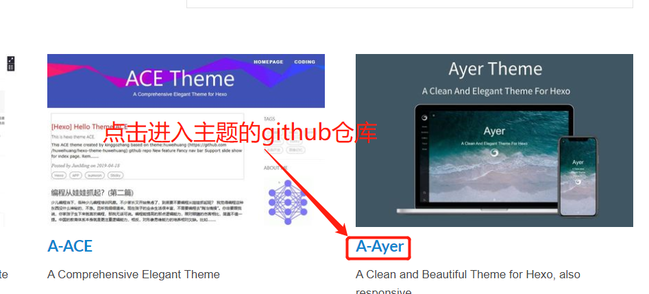<br>复制主题仓库链接<br>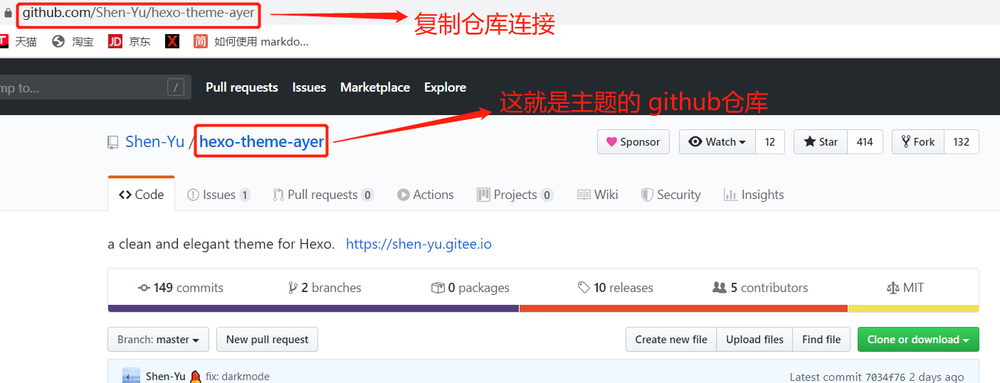<br>cmd命令进入themes文件夹，将主题的仓库代码克隆下来</p>
<figure class="highlight bash"><table><tr><td class="gutter"><pre><span class="line">1</span><br><span class="line">2</span><br><span class="line">3</span><br><span class="line">4</span><br><span class="line">5</span><br><span class="line">6</span><br><span class="line">7</span><br><span class="line">8</span><br><span class="line">9</span><br><span class="line">10</span><br></pre></td><td class="code"><pre><span class="line">C:\Blog\hexo&gt;<span class="built_in">cd</span> themes</span><br><span class="line"></span><br><span class="line">C:\Blog\hexo\themes&gt;git <span class="built_in">clone</span> https://github.com/Shen-Yu/hexo-theme-ayer.git</span><br><span class="line">Cloning into <span class="string">'hexo-theme-ayer'</span>...</span><br><span class="line">remote: Enumerating objects: 169, <span class="keyword">done</span>.</span><br><span class="line">remote: Counting objects: 100% (169/169), <span class="keyword">done</span>.</span><br><span class="line">remote: Compressing objects: 100% (121/121), <span class="keyword">done</span>.</span><br><span class="line">remote: Total 1161 (delta 74), reused 120 (delta 46), pack-reused 992</span><br><span class="line">Receiving objects: 100% (1161/1161), 4.88 MiB | 219.00 KiB/s, <span class="keyword">done</span>.</span><br><span class="line">Resolving deltas: 100% (708/708), <span class="keyword">done</span>.</span><br></pre></td></tr></table></figure>
<p>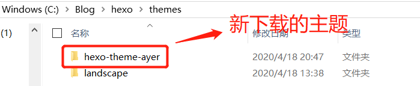<br>主题下载完成，然后将_config.ym配置文件中主题的配置改为新下载的主题<br>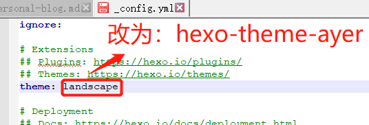<br>cmd命令hexo s重启服务 访问<a href="http://localhost:4000" target="_blank" rel="noopener">http://localhost:4000</a><br>我们可以看到博客主题已经更换成功了<br>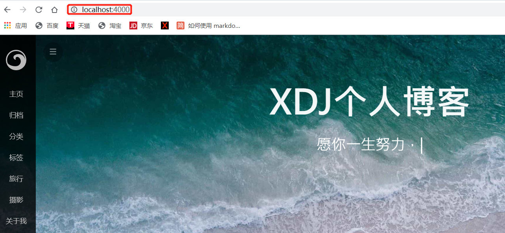</p>
<h3 id="博客编写完之后如何部署到github？"><a href="#博客编写完之后如何部署到github？" class="headerlink" title="博客编写完之后如何部署到github？"></a>博客编写完之后如何部署到github？</h3><p>hexo官方文档上有个可以实现一键部署的操作，通过 npm install hexo-deployer-git –save 命令安装git在hexo上的插件，<br>安装完成后就可以通过 hexo d 命令将博客部署到GitHub上。<br>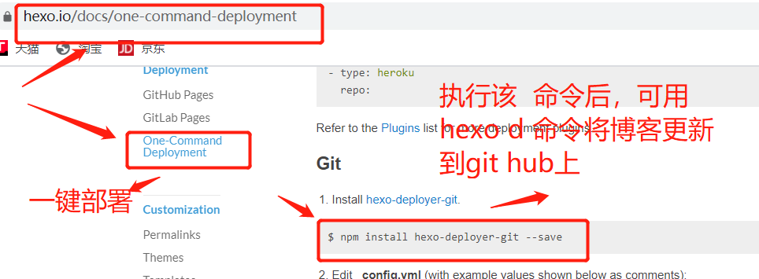</p>
<figure class="highlight bash"><table><tr><td class="gutter"><pre><span class="line">1</span><br><span class="line">2</span><br><span class="line">3</span><br><span class="line">4</span><br><span class="line">5</span><br><span class="line">6</span><br><span class="line">7</span><br><span class="line">8</span><br><span class="line">9</span><br></pre></td><td class="code"><pre><span class="line">C:\Blog\hexo&gt;npm install hexo-deployer-git --save</span><br><span class="line">npm WARN optional SKIPPING OPTIONAL DEPENDENCY: fsevents@2.1.2 (node_modules\fsevents):</span><br><span class="line">npm WARN notsup SKIPPING OPTIONAL DEPENDENCY: Unsupported platform <span class="keyword">for</span> fsevents@2.1.2: wanted &#123;<span class="string">"os"</span>:<span class="string">"darwin"</span>,<span class="string">"arch"</span>:<span class="string">"any"</span>&#125; (current: &#123;<span class="string">"os"</span>:<span class="string">"win32"</span>,<span class="string">"arch"</span>:<span class="string">"x64"</span>&#125;)</span><br><span class="line"></span><br><span class="line">+ hexo-deployer-git@2.1.0</span><br><span class="line">added 1 package from 1 contributor <span class="keyword">in</span> 1.312s</span><br><span class="line"></span><br><span class="line">5 packages are looking <span class="keyword">for</span> funding</span><br><span class="line">  run `npm fund` <span class="keyword">for</span> details</span><br></pre></td></tr></table></figure>
<p>插件安装完成之后还需要修改一下_config.yml文件的配置，<br>打开配置文件，拉到最后，如下图：<br>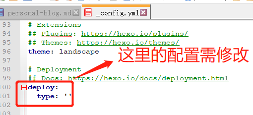<br>那么这里要怎么配置呢？这个配置hexo官方文档有说明：<br>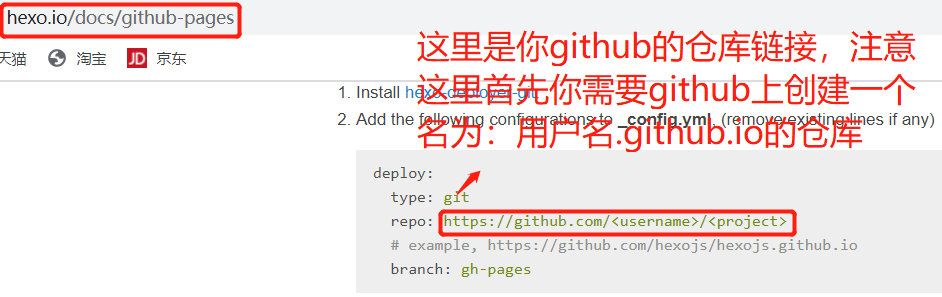<br>在你的github上创建好 用户名.github.io仓库之后将链接复制进_config.yml配置文件即可，如下图：<br>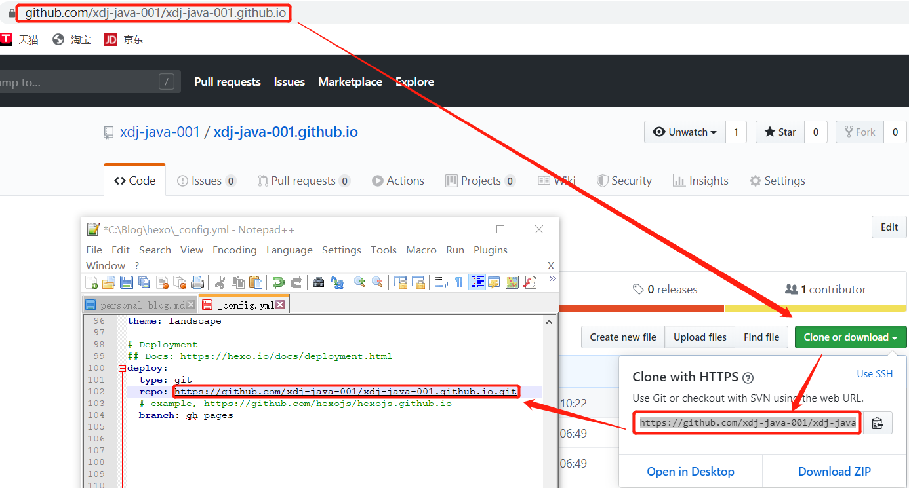<br>接下来就可以通过 hexo g命令生成所有的静态页</p>
<figure class="highlight bash"><table><tr><td class="gutter"><pre><span class="line">1</span><br></pre></td><td class="code"><pre><span class="line">C:\Blog\hexo&gt;hexo g</span><br></pre></td></tr></table></figure>
<p>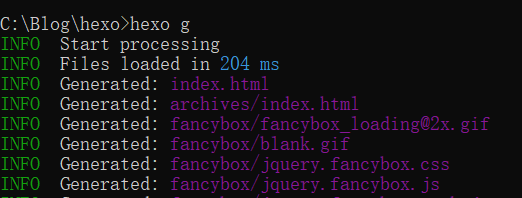<br>然后在通过hexo d 命令将博客部署到github上了<br>注：第一次执行hexo d 命令需要输入github 账号密码登陆验证<br>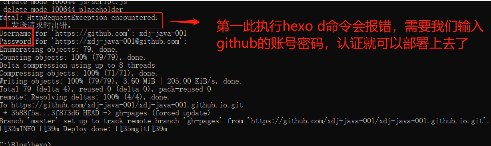<br>我们进入github.io仓库就能看到，之前用hexo g生成的所有静态页面都已经部署上去了<br>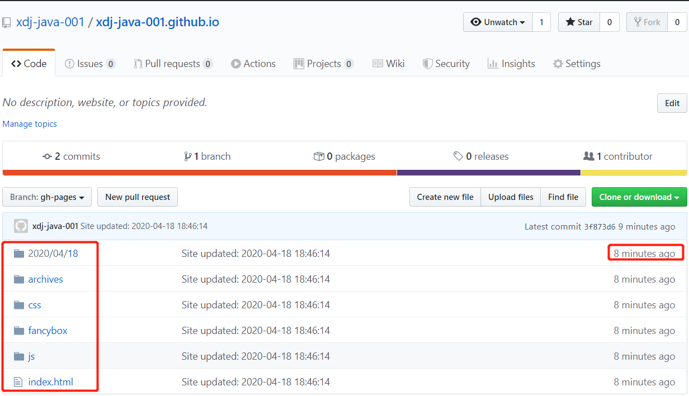</p>

      
      <!-- reward -->
      
      <div id="reward-btn">
        Donate
      </div>
      
    </div>
    
    
      <!-- copyright -->
      
        <div class="declare">
          <ul class="post-copyright">
            <li>
              <i class="ri-copyright-line"></i>
              <strong>Copyright： </strong>
              Copyright is owned by the author. For commercial reprints, please contact the author for authorization. For non-commercial reprints, please indicate the source.
            </li>
          </ul>
        </div>
        
    <footer class="article-footer">
      
          
<div class="share-btn">
      <span class="share-sns share-outer">
        <i class="ri-share-forward-line"></i>
        分享
      </span>
      <div class="share-wrap">
        <i class="arrow"></i>
        <div class="share-icons">
          
          <a class="weibo share-sns" href="javascript:;" data-type="weibo">
            <i class="ri-weibo-fill"></i>
          </a>
          <a class="weixin share-sns wxFab" href="javascript:;" data-type="weixin">
            <i class="ri-wechat-fill"></i>
          </a>
          <a class="qq share-sns" href="javascript:;" data-type="qq">
            <i class="ri-qq-fill"></i>
          </a>
          <a class="douban share-sns" href="javascript:;" data-type="douban">
            <i class="ri-douban-line"></i>
          </a>
          <!-- <a class="qzone share-sns" href="javascript:;" data-type="qzone">
            <i class="icon icon-qzone"></i>
          </a> -->
          
          <a class="facebook share-sns" href="javascript:;" data-type="facebook">
            <i class="ri-facebook-circle-fill"></i>
          </a>
          <a class="twitter share-sns" href="javascript:;" data-type="twitter">
            <i class="ri-twitter-fill"></i>
          </a>
          <a class="google share-sns" href="javascript:;" data-type="google">
            <i class="ri-google-fill"></i>
          </a>
        </div>
      </div>
</div>

<div class="wx-share-modal">
    <a class="modal-close" href="javascript:;"><i class="ri-close-circle-line"></i></a>
    <p>扫一扫，分享到微信</p>
    <div class="wx-qrcode">
      
    </div>
</div>

<div id="share-mask"></div>
      
      

    </footer>

  </div>

  
  
  <nav class="article-nav">
    
      <a href="/2020/04/18/hello-world/" class="article-nav-link">
        <strong class="article-nav-caption">上一篇</strong>
        <div class="article-nav-title">
          
            Hello World
          
        </div>
      </a>
    
    
  </nav>


  

  
  
<!-- valine评论 -->
<div id="vcomments-box">
    <div id="vcomments">
    </div>
</div>
<script src="//cdn1.lncld.net/static/js/3.0.4/av-min.js"></script>
<script src='https://cdn.jsdelivr.net/npm/valine@1.3.10/dist/Valine.min.js'></script>
<script>
    new Valine({
        el: '#vcomments',
        app_id: '',
        app_key: '',
        path: window.location.pathname,
        notify: 'false',
        verify: 'false',
        avatar: 'monsterid',
        placeholder: '给我的文章加点评论吧~',
        recordIP: true
    });
    const infoEle = document.querySelector('#vcomments .info');
    if (infoEle && infoEle.childNodes && infoEle.childNodes.length > 0) {
        infoEle.childNodes.forEach(function (item) {
            item.parentNode.removeChild(item);
        });
    }
</script>
<style>
    #vcomments-box {
        padding: 5px 30px;
    }

    @media screen and (max-width: 800px) {
        #vcomments-box {
            padding: 5px 0px;
        }
    }

    #vcomments-box #vcomments {
        background-color: #fff;
    }

    .v .vlist .vcard .vh {
        padding-right: 20px;
    }

    .v .vlist .vcard {
        padding-left: 10px;
    }
</style>

  

  
  
  
  
  

</article>
</section>
      <footer class="footer">
  <div class="outer">
    <ul>
      <li>
        Copyrights &copy;
        2015-2020
        <i class="ri-heart-fill heart_icon"></i> 冼东剑
      </li>
    </ul>
    <ul>
      <li>
        
        
        
        Powered by <a href="https://hexo.io" target="_blank">Hexo</a>
        <span class="division">|</span>
        Theme - <a href="https://github.com/Shen-Yu/hexo-theme-ayer" target="_blank">Ayer</a>
        
      </li>
    </ul>
    <ul>
      <li>
        
        
        <span>
  <span><i class="ri-user-3-fill"></i>Visitors:<span id="busuanzi_value_site_uv"></span></s>
  <span class="division">|</span>
  <span><i class="ri-eye-fill"></i>Views:<span id="busuanzi_value_page_pv"></span></span>
</span>
        
      </li>
    </ul>
    <ul>
      
    </ul>
    <ul>
      <li>
        <!-- cnzz统计 -->
        
        <script type="text/javascript" src='https://s9.cnzz.com/z_stat.php?id=1278069914&amp;web_id=1278069914'></script>
        
      </li>
    </ul>
  </div>
</footer>
      <div class="float_btns">
        <div class="totop" id="totop">
  <i class="ri-arrow-up-line"></i>
</div>

<div class="todark" id="todark">
  <i class="ri-moon-line"></i>
</div>

      </div>
    </main>
    <aside class="sidebar on">
      <button class="navbar-toggle"></button>
<nav class="navbar">
  
  <div class="logo">
    <a href="/"></a>
  </div>
  
  <ul class="nav nav-main">
    
    <li class="nav-item">
      <a class="nav-item-link" href="/">主页</a>
    </li>
    
    <li class="nav-item">
      <a class="nav-item-link" href="/archives">归档</a>
    </li>
    
    <li class="nav-item">
      <a class="nav-item-link" href="/categories">分类</a>
    </li>
    
    <li class="nav-item">
      <a class="nav-item-link" href="/tags">标签</a>
    </li>
    
    <li class="nav-item">
      <a class="nav-item-link" href="/tags/%E6%97%85%E8%A1%8C/">旅行</a>
    </li>
    
    <li class="nav-item">
      <a class="nav-item-link" href="http://shenyu-vip.lofter.com" target="_blank" rel="noopener">摄影</a>
    </li>
    
    <li class="nav-item">
      <a class="nav-item-link" href="/2019/about">关于我</a>
    </li>
    
  </ul>
</nav>
<nav class="navbar navbar-bottom">
  <ul class="nav">
    <li class="nav-item">
      
      <a class="nav-item-link nav-item-search"  title="Search">
        <i class="ri-search-line"></i>
      </a>
      
      
      <a class="nav-item-link" target="_blank" href="/atom.xml" title="RSS Feed">
        <i class="ri-rss-line"></i>
      </a>
      
    </li>
  </ul>
</nav>
<div class="search-form-wrap">
  <div class="local-search local-search-plugin">
  <input type="search" id="local-search-input" class="local-search-input" placeholder="Search...">
  <div id="local-search-result" class="local-search-result"></div>
</div>
</div>
    </aside>
    <script>
      if (window.matchMedia("(max-width: 768px)").matches) {
        document.querySelector('.content').classList.remove('on');
        document.querySelector('.sidebar').classList.remove('on');
      }
    </script>
    <div id="mask"></div>

<!-- #reward -->
<div id="reward">
  <span class="close"><i class="ri-close-line"></i></span>
  <p class="reward-p"><i class="ri-cup-line"></i>请我喝杯咖啡吧~</p>
  <div class="reward-box">
    
    <div class="reward-item">
      
      <span class="reward-type">支付宝</span>
    </div>
    
    
    <div class="reward-item">
      
      <span class="reward-type">微信</span>
    </div>
    
  </div>
</div>
    
<script src="/js/jquery-2.0.3.min.js"></script>


<script src="/js/lazyload.min.js"></script>


<script>
  try {
    var typed = new Typed("#subtitle", {
      strings: ['面朝大海，春暖花开', '愿你一生努力，一生被爱', '想要的都拥有，得不到的都释怀'],
      startDelay: 0,
      typeSpeed: 200,
      loop: true,
      backSpeed: 100,
      showCursor: true
    });
  } catch (err) {
  }

</script>


<script src="/js/tocbot.min.js"></script>

<script>
  // Tocbot_v4.7.0  http://tscanlin.github.io/tocbot/
  tocbot.init({
    tocSelector: '.tocbot',
    contentSelector: '.article-entry',
    headingSelector: 'h1, h2, h3, h4, h5, h6',
    hasInnerContainers: true,
    scrollSmooth: true,
    scrollContainer: 'main',
    positionFixedSelector: '.tocbot',
    positionFixedClass: 'is-position-fixed',
    fixedSidebarOffset: 'auto'
  });
</script>


<script src="https://cdn.jsdelivr.net/npm/jquery-modal@0.9.2/jquery.modal.min.js"></script>
<link rel="stylesheet" href="https://cdn.jsdelivr.net/npm/jquery-modal@0.9.2/jquery.modal.min.css">
<script src="https://cdn.jsdelivr.net/npm/justifiedGallery@3.7.0/dist/js/jquery.justifiedGallery.min.js"></script>

<script src="/dist/main.js"></script>


<!-- Root element of PhotoSwipe. Must have class pswp. -->
<div class="pswp" tabindex="-1" role="dialog" aria-hidden="true">

    <!-- Background of PhotoSwipe. 
         It's a separate element as animating opacity is faster than rgba(). -->
    <div class="pswp__bg"></div>

    <!-- Slides wrapper with overflow:hidden. -->
    <div class="pswp__scroll-wrap">

        <!-- Container that holds slides. 
            PhotoSwipe keeps only 3 of them in the DOM to save memory.
            Don't modify these 3 pswp__item elements, data is added later on. -->
        <div class="pswp__container">
            <div class="pswp__item"></div>
            <div class="pswp__item"></div>
            <div class="pswp__item"></div>
        </div>

        <!-- Default (PhotoSwipeUI_Default) interface on top of sliding area. Can be changed. -->
        <div class="pswp__ui pswp__ui--hidden">

            <div class="pswp__top-bar">

                <!--  Controls are self-explanatory. Order can be changed. -->

                <div class="pswp__counter"></div>

                <button class="pswp__button pswp__button--close" title="Close (Esc)"></button>

                <button class="pswp__button pswp__button--share" style="display:none" title="Share"></button>

                <button class="pswp__button pswp__button--fs" title="Toggle fullscreen"></button>

                <button class="pswp__button pswp__button--zoom" title="Zoom in/out"></button>

                <!-- Preloader demo http://codepen.io/dimsemenov/pen/yyBWoR -->
                <!-- element will get class pswp__preloader--active when preloader is running -->
                <div class="pswp__preloader">
                    <div class="pswp__preloader__icn">
                        <div class="pswp__preloader__cut">
                            <div class="pswp__preloader__donut"></div>
                        </div>
                    </div>
                </div>
            </div>

            <div class="pswp__share-modal pswp__share-modal--hidden pswp__single-tap">
                <div class="pswp__share-tooltip"></div>
            </div>

            <button class="pswp__button pswp__button--arrow--left" title="Previous (arrow left)">
            </button>

            <button class="pswp__button pswp__button--arrow--right" title="Next (arrow right)">
            </button>

            <div class="pswp__caption">
                <div class="pswp__caption__center"></div>
            </div>

        </div>

    </div>

</div>

<link rel="stylesheet" href="https://cdn.jsdelivr.net/npm/photoswipe@4.1.3/dist/photoswipe.min.css">
<link rel="stylesheet" href="https://cdn.jsdelivr.net/npm/photoswipe@4.1.3/dist/default-skin/default-skin.min.css">
<script src="https://cdn.jsdelivr.net/npm/photoswipe@4.1.3/dist/photoswipe.min.js"></script>
<script src="https://cdn.jsdelivr.net/npm/photoswipe@4.1.3/dist/photoswipe-ui-default.min.js"></script>

<script>
    function viewer_init() {
        let pswpElement = document.querySelectorAll('.pswp')[0];
        let $imgArr = document.querySelectorAll(('.article-entry img:not(.reward-img)'))

        $imgArr.forEach(($em, i) => {
            $em.onclick = () => {
                // slider展开状态
                // todo: 这样不好，后面改成状态
                if (document.querySelector('.left-col.show')) return
                let items = []
                $imgArr.forEach(($em2, i2) => {
                    let img = $em2.getAttribute('data-idx', i2)
                    let src = $em2.getAttribute('data-target') || $em2.getAttribute('src')
                    let title = $em2.getAttribute('alt')
                    // 获得原图尺寸
                    const image = new Image()
                    image.src = src
                    items.push({
                        src: src,
                        w: image.width || $em2.width,
                        h: image.height || $em2.height,
                        title: title
                    })
                })
                var gallery = new PhotoSwipe(pswpElement, PhotoSwipeUI_Default, items, {
                    index: parseInt(i)
                });
                gallery.init()
            }
        })
    }
    viewer_init()
</script>


<script src="/js/busuanzi-2.3.pure.min.js"></script>


<script type="text/javascript" src="https://js.users.51.la/20544303.js"></script>


<!-- 复制 -->

  
<link rel="stylesheet" href="/css/clipboard.css">

  <script src="https://cdn.jsdelivr.net/npm/clipboard@2/dist/clipboard.min.js"></script>
<script>
  function wait(callback, seconds) {
    var timelag = null;
    timelag = window.setTimeout(callback, seconds);
  }
  !function (e, t, a) {
    var initCopyCode = function(){
      var copyHtml = '';
      copyHtml += '<button class="btn-copy" data-clipboard-snippet="">';
      copyHtml += '<i class="ri-file-copy-2-line"></i><span>COPY</span>';
      copyHtml += '</button>';
      $(".highlight .code pre").before(copyHtml);
      $(".article pre code").before(copyHtml);
      var clipboard = new ClipboardJS('.btn-copy', {
        target: function(trigger) {
          return trigger.nextElementSibling;
        }
      });
      clipboard.on('success', function(e) {
        let $btn = $(e.trigger);
        $btn.addClass('copied');
        let $icon = $($btn.find('i'));
        $icon.removeClass('ri-file-copy-2-line');
        $icon.addClass('ri-checkbox-circle-line');
        let $span = $($btn.find('span'));
        $span[0].innerText = 'COPIED';
        
        wait(function () { // 等待两秒钟后恢复
          $icon.removeClass('ri-checkbox-circle-line');
          $icon.addClass('ri-file-copy-2-line');
          $span[0].innerText = 'COPY';
        }, 2000);
      });
      clipboard.on('error', function(e) {
        e.clearSelection();
        let $btn = $(e.trigger);
        $btn.addClass('copy-failed');
        let $icon = $($btn.find('i'));
        $icon.removeClass('ri-file-copy-2-line');
        $icon.addClass('ri-time-line');
        let $span = $($btn.find('span'));
        $span[0].innerText = 'COPY FAILED';
        
        wait(function () { // 等待两秒钟后恢复
          $icon.removeClass('ri-time-line');
          $icon.addClass('ri-file-copy-2-line');
          $span[0].innerText = 'COPY';
        }, 2000);
      });
    }
    initCopyCode();
  }(window, document);
</script>


    
  </div>
</body>

</html>